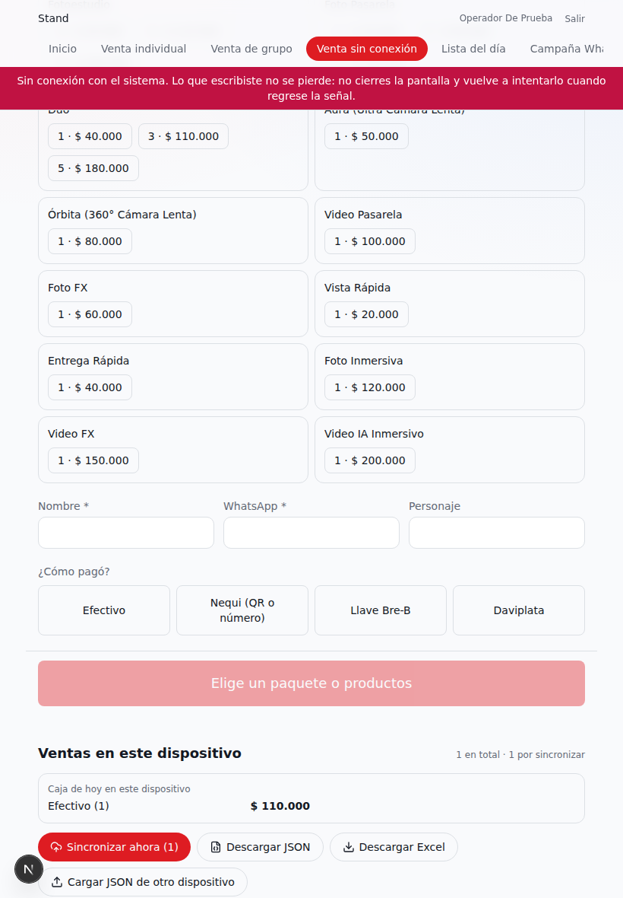

Cosplay Inc · SOFA 2026
Stand: guía rápida para vender
El menú de arriba
Siempre a la vista: Inicio (buscar reservas, turnos del día), Venta individual, Venta de grupo y Campaña WhatsApp. Quien carga fotos o administra ve además esas opciones. La pantalla en la que estás queda marcada.
Venta individual, en tres pasos
- Qué lleva: toca un paquete (cada uno muestra lo que incluye) o arma la venta suelta tocando la cantidad de cada producto. Lo elegido queda resaltado.
- Sus datos: con el nombre y el WhatsApp basta para cobrar. El personaje ayuda a reconocerlo en la fila.
- Cómo pagó: elige el medio de pago y cobra. Sale su código y su QR para entregárselo.
El total y el botón para seguir o cobrar están siempre pegados abajo: no hace falta bajar hasta el final de la lista.


Capturas del entorno de pruebas, con un usuario vendedor de ejemplo.
Cuando la señal falla
- Arriba a la derecha se ve el estado de la conexión: «● En línea», o una franja amarilla «Conexión lenta» o roja «Sin conexión».
- Con conexión lenta: toca una vez y espera a que la acción termine.
- Si se corta justo al cobrar, sale el aviso «Se cortó la señal…». No cierres la pantalla: lo escrito sigue ahí. Cuando vuelva la conexión, toca «Cobrar» otra vez. Si la venta ya se había registrado, el sistema no la duplica y te lleva a ella.
- Lista del día (en el menú): todas las reservas del día con código, nombre, personaje, WhatsApp, qué compró, hora y si pagó. Imprímela cada mañana (o guárdala en PDF en la tablet) para atender a mano si se cae todo. Tiene datos personales: guárdala con cuidado y destrúyela al final del día.
Venta sin conexión
Antes de abrir cada día, con señal: en cada tablet o celular que vaya a vender, abran «Venta sin conexión» y verifiquen el mensaje verde «Lista para vender sin conexión». Pónganle nombre al dispositivo (por ejemplo «Tablet caja 1»). Desde ese momento la pantalla abre aunque no haya red.
- Si se cae la red, la franja roja lleva a «Venta sin conexión». Ahí se vende igual: paquete o productos, nombre, WhatsApp, personaje y cómo pagó.
- Efectivo o Nequi / Llave Bre-B / Daviplata: que pague al 3204831701 o con el QR impreso del stand; miren el comprobante en su celular y anoten la referencia.
- «Guardar venta» la deja en el dispositivo y muestra un código provisional para el cliente. Ya puede pasar a su sesión.
- Cuando vuelve la señal, las ventas se sincronizan solas (o con «Sincronizar ahora»). Cada una recibe su código oficial y aparece «Enviarle su código por WhatsApp».
Respaldo: «Descargar JSON» y «Descargar Excel» guardan las ventas del dispositivo en un archivo. Si una tablet se daña o no logra conectarse, el JSON se carga en otro dispositivo con «Cargar JSON de otro dispositivo» y se sincroniza desde ahí. Nunca se duplica: cada venta tiene su clave.
Revisar: si una venta entra sin turno porque ya no había cupo, o si el precio del sistema no coincide con lo cobrado, aparece una nota para resolverla a mano. La «Caja de hoy» muestra lo recibido por medio de pago en ese dispositivo.
Lo que funciona sin red es la venta. El check-in, los turnos y la cola necesitan conexión: para eso está la Lista del día impresa.

Captura del entorno de pruebas, sin red.